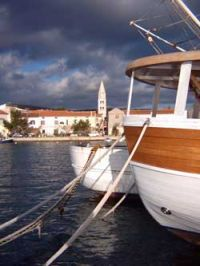
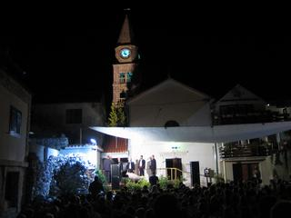

| |
|
Dalmacija, Turanj
Kako je Hrvatska u zadnje vrijeme sve popularnija među stranim turistima, a pogotovo se vidi povećanje interesa za Dalmaciju, možda ne bi bilo loše nešto reći o Dalmaciji i samom mjestu Turanj. Gledano kroz povijest, ovi krajevi su zbog trgovačkog kontakta sa stranim zemljama stalno poprimali neke strane običaje i kulturni utjecaj. Preko trgovaca i pomoraca su se uvijek širile priče, knjige, slike i umjetnine, pa se na taj način širila i kultura.
Kulturni utjecaj je vidljiv kako kroz utjecaj ranih hrvatskih književnika (koji su većinom Dalmatinci) tako i kroz arhitekturu starijih gradova u Dalmaciji koji su puni kulturno-povijesnih spomenika. Kako se na ovom području izmjenilo nekoliko civilizacija, počevši od antičke Grčke i Rimskog carstva, ljudi su zadržavali neke običaje. Osim kulturnog utjecaja mediteranskih zemalja također su ostali mediteranski mentalitet i gostoljubivost.
Turanj je idilično primorsko mjesto sa nešto više od 1200 stanovnika. Nalazi se na vrlo lijepom položaju u Pašmanskom kanalu i okružuje ga mali arhipelag sa 16 otočića. Prostire se uz otprilike 4 kilometra obale, a kroz mjesto prolazi i Jadranska magistrala što ga čini prometno lako dostupnim. U blizini su gradovi Biograd i Zadar, tako da je Turanj atraktivno i mirno primorsko mjesto koje je ipak blizu središta regije.
Područje Turnja je tradicionalno ribarski i poljoprivredno orijentirano, tako da je okoliš očuvan i more izrazito čisto. Osim toga, Pašmanskim kanalom protječe rijetka morska struja koja periodički mijenja svoj smjer. Kanal je relativno plitak, što garantira toplo more i idealnu okolinu za početnike ali i već iskusne u ronjenju na dah.
Uz obalu su zasađeni borovi ispod kojih se možete smjestiti za vrijeme boravka na plaži. Turistima je posebno atraktivna šetnica uz more koja vodi prema sjeverozapadnom kraju mjesta gdje se nalazi crkvica stara više od tisuću godina (podignuta je 845. godine na ostacima starorimske ville rustice). U blizini je i skupina od pet otočića koja u zalazak sunca predstavlja pravi prizor za pamćenje. Na suprotnu stranu (jugoistok) se možete prošetati do sv. Filipjakova - susjednog mjesta koje je spojeno s Turnjem.
Kulturna ponuda u Turnju također iz godine u godinu postaje sve bogatija i atraktivnija, pretvarajući se iz one starinske, tipično primorskog mjesta koncentrirane u jednom razdoblju oko sredine srpnja, u osmišljen i bogat program koji traje tijekom cijelog ljeta.
Najpoznatija sezonska događanja su svakako Turanjska fešta i Turanjske klapske večeri koje se više puta tijekom ljeta održavaju na trgu ispred crkve.
Uz ostala događanja u Turnju kulturna ponuda je bogata u obližnjim gradovima (Biograd 5km, i Zadar 20km), pa je lako godišnji odmor ispuniti prema svačije ukusu.
Možda Vas zanima i Povijest Turnja ili Povijest Dalmacije. Kliknite na link da bi otvorili ili zatvorili članak.
Povijest Turnja
Područje Turnja bilo je naseljeno od brončanog doba, a prvi arheološki tragovi potječu još iz mlađeg kamenog doba. U brončano doba su bile naseljene "gradine" na brdima oko Turnja i jedna na otočiću Ričulu (Zeleni školj) na kojem se je kasnije nalazila i antička lučica. U to doba je otočić još bio spojen sa kopnom. Prvo naselje se zvalo Tukljača (Tukljačane, Tuklječane), a u rimsko doba su se tu nalazile tri lučice i veliko rimsko imanje. Tukljača je u to vrijeme bila samostalna župa, a iz tog vremena su sačuvane tri crkvene knjige na glagoljici i dva povijesno važna glagoljaška kamena natpisa. Sačuvan je i dio antičkog vodovoda Biba - Jader. Na mjesnom groblju se nalazi crkvica koja je 845. godine podignuta na ostacima rimske ville rustice, a koja se u povijesnim ispravama naziva crkva Neoskvrnjenog začeća ili Sv. Marija, a u nekim spisima i Stella maris.
Sadašnji Turanj se u povijesnim ispravama prvi put spominje u XIII. stoljeću, a 1444. godine je u Turnju sagrađena utvrda hrvatskih plemića Meštrovića. Po toj kuli je Turanj dobio ime Toretta (prema latinskom turis - toranj, kula) koje je s vremenom dobilo današnji oblik. Utvrda je bila sagrađena tik uz more, a zidine su podupirale tri kule. Iz tog vremena je ostala sačuvana jedna kula (Kaštel), glavna vrata i dio bedema. Turanj je za vrijeme Kandijskog rata bio carinarnica, a inače je kroz povijest poznat kao megdanište na kojem su se odvile mnoge bitke. U to doba je dio stanovništva bio sklonjen na obližnje otoke Pašman i Babac, a Turanj su jednom prilikom Mlečani zapalili da ne bi pao u turske ruke.
Unutar Turanjskih zidina je 1450. sagrađena crkva kojoj je zaštitnica bila Mala Gospa ili Ružarica. Tu crkvu je za vrijeme Kandijskog rata srušio i zapalio Ibrahim paša, a na njenom mjestu je 1675. sagrađena sadašnja župna crkva Gospe Karmelske. Inače, stari Turanjci su svoje mrtve ukopavali u franjevačkoj crkvi Sv. Dujma na otoku Pašmanu. Samo kad bi more bilo nemirno ukopi su se vršili u Tukljači. Zanimljiva je činjenica da je 1527. godine Turanj imao 144 stanovnika, dok je u isto vrijeme u Biogradu živjelo 70 stanovnika.Izvor teksta: ..:: sheshnjak ::..
Povijest DalmacijeStari vijek
Dalmacija se spominje prvi put na epigrafskim spomenicima i u djelima rimskih pisaca u vrijeme rimskih osvajanja istočne obale Jadrana na prijelazu iz 1. stoljeća p.K. u 1. stoljeće p.K. Rimljani su Dalmacijom nazvali provinciju, dio Ilirika. Rimska provincija Dalmacija imala je mnogo šire granice nego današnja Dalmacija. Ona je obuhvaćala ne samo današnju Dalmaciju, nego i najveći dio Bosne, Hercegovinu, Crnu Goru, zapadnu Srbiju i dio Hrvatske. Stotinjak kilometara južnije od Save protezala se granica s provincijom Panonijom. Na tom su području živjeli narodi ilirskog kulturnog kruga: Liburni, Japodi, Dalmati, Daorsi, Ardijejci, Plereji, Mezeji, Desitijati, a dijelom Autarijati i Enheleji. Nije neobično da je cijeli prostor nazvan po Dalmatima, jer su oni Rimljanima pružali najodlučniji otpor do konačne "pacifikacije". Na njihovom tlu je podignuta i Salona, dalmatinska metropola i jedan od najvećih gradova Rimskog Carstva. Ovako definiran geografski pojam Dalmacije u starom vijeku postojao je do 7. stoljeća, kada je 395. godine car Teodozije podijelio Rimsko Carstvo na zapadni i istočni dio. Dalmacija je ostala u okvirima zapadne polovice Carstva, što će kasnije imati brojne implikacije. Liburnija sa središtem u Zadru je posjedovala određen stupanj samostalnosti unutar Dalmacije.
Srednji vijek
Dolaskom Germana i Slavena na tlo Dalmacije započinje njeno teritorijalno pulsiranje. Rimska vlast se povlači u jače utvrđene gradove uz jadransku obalu i na većim otocima. U vrijeme dolaska Slavena Dalmaciju u stvari čine neki veći gradovi (sa uskim prstenom poljoprivrednih površina neposredno uz gradske zidine) na istočnojadranskoj obali i otocima koji priznaju vlast bizantskog cara: Krk, Osor, Rab, Zadar, Trogir i Kotor. Uskoro se navedenim gradovima pridružuju Split i Dubrovnik (njegujući urbanu tradiciju Salone i Epidaurusa). Bizant je navedene gradove organizirao u temu, vojno-upravnu jedinicu sa sjedištem u Zadru. Od tada je Zadar glavni grad Dalmacije, a to će ostati sve do 1918. (kada ga je na temelju tajnog londonskog ugovora okupirala Italija). Bizantski gradovi su postali žarišta romanske kulture, latinskog jezika i kršćanske vjere u slavenskom okruženju. Uskoro je s pozadinom oživjela diplomatska, gospodarska i kulturna suradnja. Dobrim dijelom se kršćanstvo širilo u kopnenu dubinu upravo iz dalmatinskih gradova, bez obzira na namjere crkvene vlasti (Rima i Carigrada). U državnim uredima Bizanta, drugih europskih država, ali i rimske kurije de iure zadržano je starovjekovno shvaćanje veličine Dalmacije, s kojom se podudara i crkveno-teritorijalna organizacija splitske metropolije potvrđena (ili utvrđena) splitskim crkvenim saborima 925. i 928. godine nastalima poslije ujedinjenja Dalmacije s Kraljevinom Hrvatskom pod skriptom kralja Tomislava.
Koristeći slabljenje Slavenskih zemalja u zaleđu krajem 11. stoljeća, Venecija je nastojala preuzeti političku kontrolu nad istočnom obalom Jadrana. Godine 1000. Venecija bez većeg otpora osvaja dalmatinske gradove i otoke i od tada, uz kraće prekide, postaje vodeća vlast u Dalmaciji (i na Jadranu) do 1797. godine. Dubrovnik se uspješno istrgnuo iz čvrstog zagrljaja Venecije, zahvaljujući vještim diplomatskim manevrima. Najduže razdoblje nesmetane vladavine ugarskih kraljeva nad Dalmacijom, odnosno nad dalmatinskim gradovima s pripadajućim teritorijima na otocima i u kopnenom zaleđu bilo je od 1358. (nakon Zadarskog mira) do 1409. To je doba procvata dalmatinskih komuna, posebno Zadra, Šibenika, Trogira, Splita i Dubrovnika, kada ti gradovi postaju jezgra dinamične strukture cijele regije. Osvajanja bosanskih vladara krajem 14. stoljeća nisu bitnije utjecala na komunikaciju između dalmatinskih gradova i njihovog zaleđa niti na međusobnu komunikaciju pojedinih gradova (jer se ona najvećim dijelom odvijala putem mora).
Novi vijek
Dinastički sukobi u Ugarskom kraljevstvu značajno su slabili središnju kraljevsku vlast što se odražavalo snažnim centripetalnim težnjama rubnih pokrajina. Takvo stanje je iskoristila Venecija, koja je pomoću diplomatskih (Ladislavova prodaja prava na Dalmaciju za 100 000 dukata) i vojnih poduhvata postupno ovladala najvećim dijelom Dubrovačke Republike. Mletačko imanje u Dalmaciji je bitno smanjeno osvajanjima osmanlijskih Turaka krajem 15. i tijekom 16. stoljeća. Kartografski izvori 17. stoljeća, slijedeći državno-pravna shvaćanja toga doba, prostor Dalmatinske Zagore i zapadni dio Hercegovine nazivaju Turskom Dalmacijom.
Mletačka osvajanja krajem 17. stoljeća su doprinijela povećanju veličine Dalmacije. U ratu od 1688. do 1699. osvojeni su Knin, Sinj, Vrlika, Vrgorac, Metković i Herceg Novi, pa se granica mletačkih i turskih posjeda pomiče na Liniju Grimani (aquisto nuovo). U ratu od 1715. do 1718. Venecija se proširila u Dalmaciji osvajanjem Imotske krajine i manjih područja u Boki kotorskoj (aquisto nuovissimo). U nastalim prilikama Dubrovačka Republika je, da ne bi direktno graničila s Mletačkom Republikom, ustupila Osmanlijskom Carstvu izlaz na more kraj poluotoka Kleka (Neum) i u području rječice Sutorine u Boki. Granice Dalmacije utvrđene Linijom Mocenigo 1718. (s područjem Dubrovačke Republike) do 1918. su ostale nepromijenjene. U vrijeme osmanlijske uprave izmijenjena je etnička struktura stanovništva, koja je potencirala postojeće razlike. To se dobro može pratiti i na temelju povlačenja čakavskog narječja unutar gradskih zidina primorskih gradova i na otoke, dok se u prostoru Ravnih kotara, Bukovice i Dalmatinske Zagore širi štokavsko narječje. U zaleđini Dalmacije naseljava se pravoslavno vlaško i srpsko stanovništvo. Osim jezičnih i vjerskih razlika, do izražaja dolaze i socio-kulturološke razlike. Jasno se razlikuju dva kulturna sloja: otočni i primorski prostor sredozemne uljudbe, te dalmatinsko zaleđe s naglašenim elementima dinarske patrijarhalne kulture. Dioba na Bodule i Vlaje samo je šaljiv i primitivni odraz navedenih razlika. Međutim, između te dvije kulturne jedinice nije moguće utvrditi oštru granicu jer društvene i ekonomske veze postupno rezultiraju interakcijom i međusobnim prožimanjem.
Vrijeme Napoleonovih ratova
Dalmacija je u političkom smislu konačno ujedinjena u vrijeme Napoleonovih ratova. Godine 1806. francuska vojska je umarširala u Dubrovnik, a 1808. Republika Sv. Vlaha je ukinuta, a njen teritorij pripojen Dalmaciji. Nakon pada Napoleona, odredbama Bečkog kongresa 1814. i 1815. god. Dalmacija je pripojena Austrijskoj Carevini. Kako bi što više integrirao prostor od otoga Paga do Budve (a od 1878. do Bara) bečki dvor je osnovao posebnu teritorijalnu jedinicu: Kraljevinu Dalmaciju, te jedinstvenu zadarsku crkvenu pokrajinu (metropoliju), kojoj su podređene sve dalmatinske biskupije uključujući Split i Dubrovnik, dotadašnja nadbiskupska središta.
Između 1. i 2. svjetskog rata
Godine 1918, nakon pada Austro-ugarske Monarhije, nastupaju krupne promjene. Od 1918. Dalmacija kao političko-geografski pojam više ne postoji. Italija je okupirala Zadar i Lastovo, a talijanska okupacija potvrđena je Rapalskim ugovorom 1920. Uredbom o podjeli zemlje Kraljevine SHS 1922. Dalmacija je podijeljena na Splitsku i Dubrovačku oblast. God. 1929. najveći dio Dubrovačke oblasti pripojen je Zetskoj banovini, a ostatak Dalmacije je činio Primorsku banovinu sa središtem u Splitu. Korčula je 1931. izuzeta iz Zetske i pripojena Primorskoj banovini, a 1939. Primorska banovina i dubrovački kraj ulaze u sastav Banovine Hrvatske. Nakon previranja u Drugom svjetskom ratu cijeli taj prostor Dalmacije, definirane nakon mletačko-turskih sukoba i ukidanja Dubrovačke Republike, ušao je u sastav SFRJ.
Poslije 2. svjetskog rata
Suvremena županijska podjela Republike Hrvatske dezintegrirala je prostor Južne Hrvatske na četiri županije, od kojih samo jedna nosi dalmatinsko ime: Splitsko-dalmatinska županija. Suvremeni regionalni razvoj Južne Hrvatske ukazuje na zaključak kako Dalmacije zapravo više nema. Izvan funkcionalnog utjecaja Splita, najvećeg gradskog središta u prostoru Dalmacije, je posebno grad Zadar, koji gravitacijskim silama integrira geografski profil: otoci – Ravni kotari i Bukovica – Velebit – južna Lika. Centripetalni čimbenici u odnosu na Split su izraženi i u prostoru Dubrovnika (osim Donjoneretvanskog kraja). Povijesni pojam Dalmacija politički i funkcionalno ne živi gotovo 100 godina. Ostaje pitanje izjašnjavanja o regionalnoj pripadnosti stanovnika Južne Hrvatske, i to ono koje nije (samo) kolokvijalno (na primjer, na nivou Zagorci – Dalmatinci, Purgeri – Dalmatinci i sl.). U svakom slučaju, Dalmacija je povijesno-geografski činila dinamičnu odrednicu južnog dijela hrvatskog nacionalnog prostora. U kulturnom i povijesnom smislu Dalmacija je kao pojam i geografsko ime neosporna i nezamjenjiva, ali i s ekonomskog i političkog gledišta ona sve manje funkcionira kao jedna cjelina.Izvor teksta: Wikipedia
|